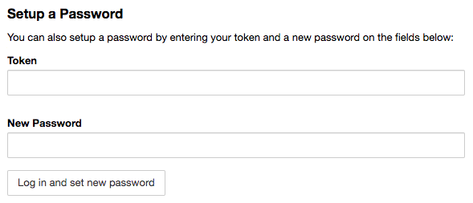

Running Jupyter Lab Remotely
Updated Sept. 19, 2019: Added separate instructions for running on a compute node
I’m a huge fan of Jupyter Notebooks, and I was very excited when I found out about Jupyter Lab, which provides a much more comprehensive user experience around Jupyter Notebooks. Other posts have covered in more detail why we should switch to using Jupyter Lab instead, so I won’t talk about that here.
Instead, I just want to share how to run Jupyter Lab efficiently on a remote machine. I have a research cluster where I do most of my analyses for my PhD work, and running Jupyter Lab directly on the cluster means I don’t have to copy files between the cluster and my desktop.
Before we begin, one thing to keep in mind about research clusters, i.e. High Performance Computing (HPC) clusters, is the concept of a login node vs a compute node. When you ssh into your cluster, you are immediately in a login node, which is where you do all your main file editing and manipulation. These nodes usually don’t have the memory required for intense compute jobs, which is where the compute nodes come in. You typically submit jobs via job schedulers like SLURM or PBS to those compute nodes.
With that in mind, this post will be split into information for running Jupyter Lab on 1) a login node, and 2) a compute node. You should ask your system administrator which they would prefer.
Contents: - Running on a login node - Commands - Simplfying the remote side - Simplfying the local side - Putting it all together - Running on a compute node - Commands - Simplfying the remote side - Simplfying the local side - Putting it all together
Running on a login node
Commands
To run Jupyter Lab on a login node, you need to open 2 terminal windows. In the first window:
$ ssh username@hostname
$ jupyter lab --no-browser --port=5678
...
[I 10:17:14.160 LabApp] Use Control-C to stop this server and shut down all kernels (twice to skip confirmation).
[C 10:17:14.160 LabApp]
Copy/paste this URL into your browser when you connect for the first time,
to login with a token:
http://localhost:5678/?token=XXXXXXXXXXXXXXXXXXXXXXXXXXXXXXXXXXXXXXXXXXXXXXXXNote that the default port for Jupyter is 8888, but to be courteous to other potential users of this cluster, you should choose an arbitrary 4-digit number (I arbitrarily chose 5678 in this case) to leave 8888 available in case someone else is playing with Jupyter.
Then in the second window:
$ ssh -CNL localhost:5678:localhost:5678 username@hostnameThen in your web browser of choice, navigate to
localhost:5678in the url bar. A login screen will show up asking for a token. Scroll down and you’ll see an option to set up a password:

Enter the token (i.e. XXXXXXXXXXXXXXXXXXXXXXXXXXXXXXXXXXXXXXXXXXXXXXXX from above) and your desired password, and from now on you can just use your password to login.
All that is kind of a lot just to open up Jupyter Lab. So I found ways to significantly simplify the process from both the remote and local side.
Simplfying the remote side
To make things easier on the remote machine side of things, tmux (or screen) and bash aliases and functions really come in handy. I like to have a Jupyter Lab session running constantly in my remote machine whether I’m logged in or not. Then I can ssh tunnel in to the existing session whenever I want! To do this, I do the following:
$ ssh username@hostname
$ tmux
[ opens persistent shell session ]
$ jlremote
...
[I 10:17:14.160 LabApp] Use Control-C to stop this server and shut down all kernels (twice to skip confirmation).
[C 10:17:14.160 LabApp]
Copy/paste this URL into your browser when you connect for the first time,
to login with a token:
http://localhost:8888/?token=XXXXXXXXXXXXXXXXXXXXXXXXXXXXXXXXXXXXXXXXXXXXXXXXI have jlremote defined as an alias in my remote ~/.bashrc file like so:
alias jlremote='jupyter lab --no-browser --port=5678'So once I have that Jupyter Lab session running, I can detach from the tmux session with CTRL-b, d (or CTRL-a, CTRL-d if you used the screen command), and let that process run indefinitely (days, weeks, months…).
Now let’s deal with the local stuff.
Simplfying the local side
On the local side, I wanted to be able to run a single command like jllocal to open Jupyter Lab, so I wrote a bash function that goes in my local ~/.bashrc file. If you use this make sure to edit all the all-caps stuff, like USERNAME and HOSTNAME.
function jllocal {
port=5678
remote_username=USERNAME
remote_hostname=HOSTNAME
url="http://localhost:$port"
echo "Opening $url"
open "$url"
cmd="ssh -CNL localhost:"$port":localhost:"$port" $remote_username@$remote_hostname"
echo "Running '$cmd'"
eval "$cmd"
}This function does a few things when you type jllocal:
- Runs ssh tunneling command if it’s not already running
- Grabs the Jupyter token from the remote machine
- Opens a tab in your browser with the right url and token for you
When you’re done accessing your Jupyter Lab session, type CTRL-C and it will shut down the ssh tunnel.
Putting it all together
So with an alias in place in your remote ~/.bashrc, a persistent remote tmux/screen session running Jupyter Lab, and a function defined in your local ~/.bashrc, all you need to do to open Jupyter Lab in your browser is a jllocal call on your local machine, and then CTRL-C when you’re done. It takes some initial set up work, but the simplicity in the end is worth it.
Running on a compute node
Now let’s do the same thing, but for those of you who need to run Jupyter lab on a compute node instead of a login node. There’s a little bit more setup to think about, but in the end, jllocal should be all you need to type to access your Jupyter Lab session, just like on a login node.
Commands
To run Jupyter Lab on a compute node, you once again need to open 2 terminal windows. In the first window:
$ ssh username@hostname
$ srun --mem=2G --pty bash
$ hostname
computehostname
$ jupyter lab --no-browser --port=5678 --ip=$(hostname)
...
[I 10:17:14.160 LabApp] Use Control-C to stop this server and shut down all kernels (twice to skip confirmation).
[C 10:17:14.160 LabApp]
Copy/paste this URL into your browser when you connect for the first time,
to login with a token:
http://computehostname:5678/?token=XXXXXXXXXXXXXXXXXXXXXXXXXXXXXXXXXXXXXXXXXXXXXXXXIf that gives you any errors, especially one that says KeyError: 'runtime_dir' in it, try replacing the jupyter line with
$ XDG_RUNTIME_DIR= jupyter lab --no-browser --port=5678 --ip=$(hostname)For me, the XDG_RUNTIME_DIR environmental variable caused some problems, and setting it to a blank value fixed it.
Note that the default port for Jupyter is 5678, but to be courteous to other potential users of this cluster, you should choose an arbitrary 4-digit number (I arbitrarily chose 5678 in this case) to leave 8888 available in case someone else is playing with Jupyter. Also, computehostname is whatever the node spits out when you type hostname. It could look something like node07.
Then in the second window:
$ ssh -CNL 5678:computehostname:5678 username@hostnameWhere, once again, computehostname is the hostname of whatever compute node you got assigned when you ran your interactive compute job with the srun command above.
Then in your web browser of choice, navigate to
localhost:5678in the url bar. If you haven’t already set a password, a login screen will show up asking for a token. Scroll down and you’ll see an option to set up a password:
Enter the token (i.e. XXXXXXXXXXXXXXXXXXXXXXXXXXXXXXXXXXXXXXXXXXXXXXXX from above) and your desired password, and from now on you can just use your password to login.
Once again, just like with running on the login node, these steps can be simplified.
Simplfying the remote side
Having a forever Jupyter session on a compute node might not be an option for every cluster, but if it is, tmux or screen, plus bash aliases and functions once again come in handy. You can run an interactive compute job within a tmux session, then activate your Jupyter Lab session from within the interactive compute job, like this:
$ ssh username@hostname
$ tmux
[ opens persistent shell session ]
$ srun --mem=2G --pty bash
$ jlremote
...
[I 10:17:14.160 LabApp] Use Control-C to stop this server and shut down all kernels (twice to skip confirmation).
[C 10:17:14.160 LabApp]
Copy/paste this URL into your browser when you connect for the first time,
to login with a token:
http://localhost:8888/?token=XXXXXXXXXXXXXXXXXXXXXXXXXXXXXXXXXXXXXXXXXXXXXXXXFor this case, I have jlremote defined a little differently than for running on the login node. Before, it was an alias. Now, it’s a function (still in my remote ~/.bashrc) that looks like this:
function jlremote {
echo $(hostname) > ~/.jupyternode.txt
XDG_RUNTIME_DIR= jupyter lab --no-browser --port=9753 --ip=$(hostname)
}The main difference from before is that we’re creating a file with an arbitrary name that contains the compute node’s hostname. This will be used by the local machine to properly set up the ssh tunnel.
So once I have that Jupyter Lab session running, I can detach from the tmux session with CTRL-b, d (or CTRL-a, CTRL-d if you used the screen command), and let that process run indefinitely (days, weeks, months…), if your compute node allows it.
Now let’s deal with the local stuff.
Simplfying the local side
On the local side, the jllocal bash function also has a few changes compared to the jllocal function for login node Jupyter sessions. The new function, which is still in my local ~/.bashrc file, looks like this, but with USERNAME and HOSTNAME changed to the proper values:
function jllocal {
port=5678
remote_username=USERNAME
remote_hostname=HOSTNAME
node=$(ssh lindsb@rrlogin.seas.upenn.edu 'tail -1 ~/.jupyternode.txt')
url="http://localhost:$port"
echo "Opening $url"
open "$url"
cmd="ssh -CNL "$port":"$node":"$port" $remote_username@$remote_hostname"
echo "Running '$cmd'"
eval "$cmd"
}The main difference between this and the login node version of jllocal is that we grab the compute node hostname from the remote ~/.jupyternode.txt file we created, then use that in the ssh tunnel. Otherwise, it does all the same things. When you’re done accessing your Jupyter Lab session, type CTRL-C and it will shut down the ssh tunnel.
Putting it all together
Just like with the login node setup, with a function in place in your remote ~/.bashrc, a persistent remote tmux/screen session running Jupyter Lab, and a function defined in your local ~/.bashrc, ideally a single jllocal call on your local machine will open your browser and connect you to your session, then CTRL-C when you’re done. Hopefully all this helps someone out there, and feel free to ask questions below if you get stuck.